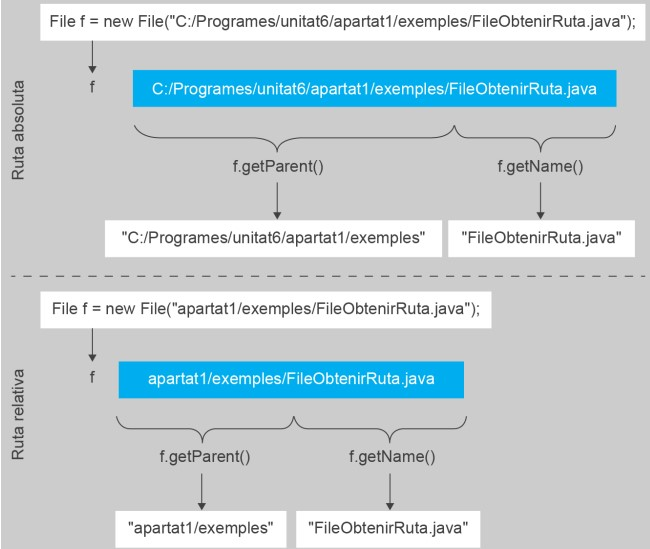

2. Gestió de fitxers
Entre les funcions d'un sistema operatiu hi ha la d'oferir mecanismes genèrics per a gestionar sistemes d'arxius. Normalment, dins d'un sistema operatiu modern (o ja no tan modern), s'espera disposar d'alguna mena d'interfície o explorador per a gestionar arxius, ja siga gràficament o mitjançant una línia d'ordres de text.
Si bé la forma en què les dades es guarden realment en els dispositius físics d'emmagatzematge pot ser molt diferent segons el tipus (magnètic, òptic, etc.), la manera de gestionar el sistema d'arxius sol ser molt similar en la immensa majoria dels casos: una estructura jeràrquica amb carpetes i fitxers.
Ara bé, en realitat, la capacitat d'operar amb el sistema d'arxius no és exclusiva de la interfície oferida pel sistema operatiu. Molts llenguatges de programació proporcionen biblioteques que permeten accedir directament als mecanismes interns que ofereix el sistema, per la qual cosa és possible crear codi font des del qual, amb les instruccions adequades, es poden realitzar operacions típiques d'un explorador d'arxius.
De fet, les interfícies com un explorador d'arxius són programes com qualsevol altre que, usant precisament aquestes biblioteques, permeten que l'usuari gestione arxius fàcilment. A més, és habitual trobar altres aplicacions amb la seua pròpia interfície per a gestionar arxius, encara que siga només per a seleccionar què cal carregar o guardar en un moment donat: editors de text, compressors, reproductors de música, etc.
Java no és cap excepció a l'hora d'oferir aquest tipus de biblioteca, en forma del conjunt de classes incloses dins del paquet java.io. Mitjançant la invocació dels mètodes adequats definits en aquestes classes, és possible dur a terme pràcticament qualsevol tasca sobre el sistema d'arxius.
2.1. La classe File
La peça més bàsica per a poder operar amb arxius, independentment del seu tipus, en un programa Java és la classe File. Aquesta classe pertany al paquet java.io, per tant, serà necessari importar-la abans de poder usar-la.
1 | |
Aquesta classe permet manipular qualsevol aspecte vinculat al sistema de fitxers. El seu nom ("arxiu", en anglés) és una mica enganyós, ja que no es refereix exactament a un arxiu.
Serveix per a realitzar operacions tant sobre rutes al sistema d'arxius que ja existisquen com sobre rutes no existents. A més, es pot usar tant per a manipular arxius com directoris.
Com qualsevol altra classe, cal instanciar-la perquè siga possible invocar els seus mètodes. El constructor de File rep com a argument una cadena de text corresponent a la ruta sobre la qual es volen dur a terme les operacions.
1 | |
Una ruta és la forma general d'un nom d'arxiu o carpeta, per la qual cosa identifica únicament la seua localització en el sistema d'arxius.
Cadascun dels elements de la ruta pot existir realment o no, però això no impedeix inicialitzar File. En realitat, el seu comportament és com una declaració d'intencions sobre amb quina ruta del sistema d'arxius es vol interactuar. No és fins que es criden els diferents mètodes definits en File, o fins que s'escriuen o es lligen dades, que realment s'accedeix al sistema de fitxers i es processa la informació.
Un aspecte important a tindre en compte en inicialitzar File és que el format de la cadena de text que conforma la ruta pot ser diferent segons el sistema operatiu sobre el qual s'executa l'aplicació. Per exemple, el sistema operatiu Windows inicia les rutes amb un nom d'unitat (C:, D:, etc.), mentre que els sistemes operatius basats en Unix comencen directament amb una barra (/).
A més, els diferents sistemes operatius usen separadors diferents dins de les rutes. Per exemple, els sistemes Unix usen la barra (/), mentre que Windows utilitza la barra inversa (\).
- Exemple de ruta Unix:
/usr/bin - Exemple de ruta Windows:
C:\Windows\System32
Atenció en Windows: la barra inversa (\) és un caràcter d'escapament en les cadenes de text en Java. Per tant, quan s'escriu una ruta amb \, cal escriure-la doble (\\) per evitar errors.
Per exemple, en Windows:
1 | |
No obstant això, Java permet utilitzar la barra (/) en Windows sense problemes, cosa que simplifica l'escriptura de rutes de fitxers de manera multiplataforma:
1 | |
És important entendre que un objecte File representa una única ruta del sistema de fitxers. Per a operar amb diferents rutes caldrà crear i manipular diversos objectes. Per exemple, en el següent codi s’instancien tres objectes File diferents:
1 2 3 | |
2.2. Rutes absolutes i relatives
En els exemples emprats fins al moment per a crear objectes del tipus File s'han usat rutes absolutes, ja que és la manera de deixar més clar a quin element dins del sistema d'arxius, ja siga arxiu o carpeta, s'està fent referència.
ATENCIÓ:
Una ruta absoluta és aquella que es refereix a un element a partir de l'arrel del sistema de fitxers. Per exemple: C:/Fotos/Foto1.png
Les rutes absolutes es distingeixen fàcilment, ja que el text que les representa comença d'una manera molt característica depenent del sistema operatiu de l'ordinador. En el cas dels sistemes operatius Windows al seu inici sempre es posa el nom de la unitat ( "C:", "D:", etc.), mentre que en el cas dels sistemes operatius Unix, aquestes comencen sempre per una barra ( "/"). Per exemple, les cadenes de text següents representen rutes absolutes en un sistema d'arxius de Windows:
- C:\Fotos\Viatges (ruta a una carpeta)
- M:\Documents\Unitat11\apartat1 (ruta a una carpeta)
- N:\Documents\Unitat11\apartat1\Activitats.txt (ruta a un arxiu)
En canvi, en el cas d'una jerarquia de fitxers sota un sistema operatiu Unix, un conjunt de rutes podrien estar representades de la següent forma:
- /Fotos/Viatges (ruta a una carpeta)
- /Documents/Unitat11/apartat1 (ruta a una carpeta)
- /Documents/Unitat11/apartat1/Activitats.txt (ruta a un arxiu)
A l'hora d'instanciar objectes de tipus File usant una ruta absoluta, sempre cal utilitzar la representació correcta segons el sistema en què s'executa el programa.
Si bé l'ús de rutes absolutes resulta útil per a indicar amb tota claredat quin element dins del sistema d'arxius s'està manipulant, hi ha casos en què el seu ús comporta certes complicacions.
Suposem que s'ha desenvolupat un programa que realitza operacions sobre el sistema d'arxius. Una vegada funciona, es comparteix el projecte Java amb un amic, que el copia al seu ordinador dins d'una carpeta qualsevol i l'obri amb el seu entorn de treball. Perquè el programa funcione perfectament, serà necessari que en el seu ordinador existisquen exactament les mateixes carpetes que en la màquina original, tal com estan escrites en el codi font. En cas contrari, no funcionarà, ja que les carpetes i fitxers esperats no existiran i, per tant, no es trobaran. Usar rutes absolutes obliga un programa a treballar sempre amb una estructura del sistema d'arxius exactament igual allà on s'execute, la qual cosa no és molt còmoda.
Per a resoldre aquest problema, a l'hora d'inicialitzar una variable de tipus File, també es pot fer referència a una ruta relativa.
ATENCIÓ:
Una ruta relativa és aquella que no inclou l'arrel i, per això, es considera que parteix des del directori de treball de l'aplicació. Aquesta carpeta pot ser diferent cada vegada que s'executa el programa.
Quan un programa s'executa, per defecte se li assigna una carpeta de treball. Aquesta carpeta sol ser la carpeta des d'on es llança el programa. En el cas d'un programa en Java executat a través d'un IDE (com NetBeans), la carpeta de treball sol ser la mateixa on s'han guardat els arxius del projecte.
El format d'una ruta relativa és similar al d'una ruta absoluta, però mai s'indica l'arrel del sistema de fitxers. Directament es comença pel primer element triat dins de la ruta. Per exemple:
- Viatges
- Unitat11/apartat1
- Unitat11/apartat1/Activitats.txt
Una ruta relativa sempre inclou el directori de treball de l'aplicació com a part inicial, malgrat no haver-se escrit explícitament. El tret distintiu és que el directori de treball pot variar.
Per exemple, l'element al qual es refereix el següent objecte File dependrà del directori de treball:
1 | |
| Directori de treball | Ruta real |
|---|---|
| C:/Projectes/Java | C:/Projectes/Java/Unitat11/apartat1/Activitats.txt |
| X:/Unitats | X:/Unitats/Unitat11/apartat1/Activitats.txt |
| /Programes | /Programes/Unitat11/apartat1/Activitats.txt |
Aquest mecanisme facilita la portabilitat del programari entre diferents ordinadors i sistemes operatius, ja que només és necessari que els arxius i carpetes romanguen en la mateixa ruta relativa al directori de treball. Vegem-ho amb un exemple:
1 | |
Donada aquesta ruta relativa, n'hi ha prou amb garantir que el fitxer Activitats.txt estiga sempre en el mateix directori de treball de l'aplicació, qualsevol que siga aquest, i independentment del sistema operatiu utilitzat (en un ordinador pot ser C:\Programes i en un altre /Java). En qualsevol d'aquests casos, la ruta sempre serà correcta.
De fet, més enllà d'això, noteu com les rutes relatives a Java permeten crear codi independent del sistema operatiu, ja que no és necessari especificar un format d'arrel lligada a un sistema d'arxius concret ("C:", "D:", "/", etc.).
2.3. Mètodes de la classe File
File ofereix diversos mètodes per a poder manipular el sistema d'arxius o obtenir informació a partir de la seua ruta. Alguns dels més significatius per a entendre les funcionalitats es mostren a continuació, ordenats per tipus d'operació.
2.3.1. Obtenció de la ruta
Una vegada s'ha instanciat un objecte de tipus File, pot ser necessari recuperar la informació emprada durant la seua inicialització i conèixer en format text a quina ruta s'està referint, o almenys part d'ella.
-
String getParent(): Retorna la ruta de la carpeta de l'element referit per aquesta ruta. Bàsicament, la cadena de text resultant és idèntica a la ruta original, eliminant l'últim element. Si la ruta tractada es refereix a la carpeta arrel d'un sistema d'arxius ("C:\", "/", etc.), aquest mètode retorna null. En el cas de tractar-se d'una ruta relativa, aquest mètode no inclou la part de la carpeta de treball. -
String getName(): Retorna el nom de l'element que representa la ruta, ja siga una carpeta o un arxiu. És el cas invers del mètodegetParent(), ja que el text resultant és només l'últim element. -
String getAbsolutePath(): Retorna la ruta absoluta. Si l'objecteFilees va inicialitzar usant una ruta relativa, el resultat inclou també la carpeta de treball.
Diagrama Mermaid
graph TD
A["File f = new File('C:/Programes/unitat6/apartat1/exemples/FileObtenirRuta.java')"]
B["Ruta absoluta"]
C["f.getParent()"]
D["f.getName()"]
E["C:/Programes/unitat6/apartat1/exemples"]
F["FileObtenirRuta.java"]
A --> B --> C --> E
B --> D --> F
G["File f = new File('apartat1/exemples/FileObtenirRuta.java')"]
H["Ruta relativa"]
I["f.getParent()"]
J["f.getName()"]
K["apartat1/exemples"]
L["FileObtenirRuta.java"]
G --> H --> I --> K
H --> J --> LImatge

Vegem un exemple de com funcionen aquests tres mètodes. Observeu que les rutes relatives s'afegixen a la ruta de la carpeta de treball (on es troba el projecte):
1 2 3 4 5 6 7 8 9 10 11 12 13 14 15 16 17 18 19 20 21 22 23 24 25 | |
1 2 3 4 5 6 7 8 9 10 11 12 13 14 15 | |
2.3.2. Comprovacions d'estat
Donada la ruta emprada per a inicialitzar una variable de tipus File, aquesta pot ser que realment existisca dins del sistema de fitxers o no, ja siga en forma d'arxiu o carpeta. La classe File ofereix un conjunt de mètodes que permeten fer comprovacions sobre el seu estat i saber si és així.
- boolean exists() comprova si la ruta existeix dins del sistema de fitxers. Retornarà
truesi existeix ifalseen cas contrari.
Normalment, els arxius incorporen en el seu nom una extensió (.txt, .jpg, .mp4, etc.). Encara així, cal tindre en compte que l'extensió no és un element obligatori en el nom d'un arxiu, només s'usa com a mecanisme perquè tant l'usuari com alguns programes puguen discriminar més fàcilment el tipus d'arxius. Per tant, només amb el text d'una ruta no es pot estar 100% segur de si aquesta es refereix a un arxiu o una carpeta. Per a poder estar realment segurs es poden usar els mètodes següents:
-
boolean isFile() comprova el sistema de fitxers a la recerca de la ruta i retorna
truesi existeix i és un fitxer. Retornaràfalsesi no existeix, o si existeix però no és un fitxer. -
boolean isDirectory() funciona com l'anterior però comprova si és una carpeta.
Per exemple, el següent codi fa una sèrie de comprovacions sobre un conjunt de rutes. Per a poder provar-ho pots crear la carpeta "Temp" en l'arrel "C:". Dins, un arxiu anomenat "Document.txt" (pot estar buit) i una carpeta anomenada “Fotos”. Després de provar el programa pots eliminar algun element i tornar a provar per a veure la diferència.
1 2 3 4 5 6 7 8 9 10 11 12 13 14 | |
2.3.3. Propietats de fitxers
El sistema de fitxers d'un sistema operatiu emmagatzema diversitat d'informació sobre els arxius i carpetes que pot resultar útil conèixer: els seus atributs d'accés, la seua grandària, la data de modificació, etc. En general, totes les dades mostrades a accedir a les propietats de l'arxiu. Aquesta informació també pot ser consultada usant els mètodes adequats. Entre els més populars hi ha els següents:
-
long length() retorna la grandària d'un arxiu en bytes. Aquest mètode només pot ser referenciat sobre una ruta que represente un arxiu, en cas contrari no es pot garantir que el resultat siga vàlid.
-
long lastModified() retorna l'última data d'edició de l'element representat per aquesta ruta. El resultat es codifica en un únic número enter, el valor del qual és el nombre de mil·lisegons que han passat des de l'1 de gener de 1970.
L'exemple següent mostra com funcionen aquests mètodes. Per a provar-los, crea l'arxiu “Document.txt" en la carpeta "C:\Temp". Primer deixa l'arxiu buit i executa el programa. Després, amb un editor de text, escriu qualsevol cosa, guarda els canvis i torna a executar el programa. Observa com el resultat és diferent. Com a curiositat, fixa't en l'ús de la classe Date per a poder mostrar la data en un format llegible.
1 2 3 4 5 6 7 8 9 10 11 12 13 14 15 16 | |
1 2 3 4 | |
1 2 3 4 | |
2.3.4. Gestió de fitxers
El conjunt d'operacions més habituals en accedir a un sistema de fitxers d'un ordinador són les vinculades a la seva gestió directa: canviar de nom arxius, esborrar-los, copiar-los o moure'ls. Donat el nom d'una ruta, Java també permet realitzar aquestes accions.
-
boolean mkdir(): Permet crear la carpeta indicada que no ha d'existir en la ruta en el moment d'invocar el mètode. Per exemple, donada una instància
Fileamb la ruta “C:/Fotos/Albania” que no existeix, crearà la carpeta “Albania” dins de “C:/Fotos”. Retornatruesi s'ha creat correctament, en cas contrari retornafalse(per exemple si la ruta és incorrecta, la carpeta ja existeix o l'usuari no té permisos d'escriptura). -
boolean delete(): Esborra l'arxiu o carpeta indicada en la ruta. Es podrà esborrar una carpeta sol si està buida. Retorna
trueofalsesegons si l'operació s'ha pogut dur a terme. -
boolean createNewFile(): Crea un arxiu buit. Java ens obligarà a incloure la instrucció dins d’un context de captura d’excepcions per control intern de Java front a errors crítics.
Per provar l'exemple que es mostra a continuació, primer assegura't que en l'arrel de la unitat "C:" no hi ha cap carpeta anomenada "Temp" i executa el programa. Tot fallarà, ja que les rutes són incorrectes (no existeix "Temp"). Després, crea la carpeta "Temp" i en el seu interior crea un nou document anomenat "Document.txt" (pot estar buit). Executa el programa i veuràs que s'haurà creat una nova carpeta anomenada "Fotos". Si ho tornes a executar per tercera vegada, podràs comprovar que s'haurà esborrat.
1 2 3 4 5 6 7 8 9 10 11 12 13 14 15 16 17 18 19 20 21 | |
Executant el codi:
-
Primera execució (sense "Temp"):
Fallarà la creació de la carpeta "Fotos" perquè no existeix el directori "Temp", i es mostrarà una línia indicant que no s'ha pogut crear ni la carpeta ni l'arxiu. -
Segona execució (creant "Temp" i "Document.txt"):
S'haurà creat la carpeta "Fotos" dins de "C:/Temp". També es crearà l'arxiu "Document.txt" si no existia. -
Tercera execució (després d'esborrar la carpeta i arxiu):
L'arxiu i la carpeta es borraran amb èxit, i es mostrarà el missatge indicant-ho.
Des del punt de vista d'un sistema operatiu, l'operació de "moure" un arxiu o carpeta no és més que canviar el seu nom des de la seva ruta original fins a una nova ruta destí. Per a fer això també hi ha un mètode.
- boolean renameTo(File destí): El nom d'aquest mètode és enganyós ("canviar de nom", en anglès), ja que la seva funció real no és simplement canviar el nom d'un arxiu o carpeta, sinó canviar la ubicació completa. El mètode invoca l'objecte File amb la ruta d'origen (on es troba l'arxiu o carpeta), i se li dona com a argument un altre objecte File amb la ruta destí. Retorna true o false segons si l'operació s'ha pogut dur a terme correctament o no (la ruta origen i destinació són correctes, no existeix ja un arxiu amb aquest nom en el destí, etc.). S’ha de tenir en compte que, en el cas de carpetes, és possible moure-les encara que continguin arxius.
Una vegada més, vegem un exemple. Dins de la carpeta "C:/Temp", crea una carpeta anomenada "Mitjana" i una altra anomenada "Fotos". Dins de la carpeta "Fotos", crea dos documents anomenats "Document.txt" i "Fotos.txt". Després d'executar el programa, observa com la carpeta "Fotos" s'ha mogut i ha canviat de nom, però manté en el seu interior l'arxiu "Fotos.txt". L'arxiu "Document.txt" s'ha mogut fins a la carpeta "Temp".
1 2 3 4 5 6 7 8 9 10 11 | |
Com ja s'ha comentat, aquest mètode també serveix, implícitament, per a canviar de nom arxius o carpetes. Si l'element final de les rutes origen i destinació són diferents, el nom de l'element, sigui arxiu o carpeta, canviarà. Per a simplement canviar de nom un element sense moure'l de lloc, simplement la seva ruta pare seguirà sent exactament la mateixa. El resultat és que l'element de la ruta origen "es mou" en la mateixa carpeta on està ara, però amb un nom diferent.
Per exemple, si utilitzem "C:/Treballs/Doc.txt" com a ruta origen i "C:/Treballs/File.txt" com a ruta destí, l'arxiu “Doc.txt” canviarà de nom a “File.txt” però romandrà en la mateixa carpeta “C:/Treballs”.
2.3.5. Llistat d'arxius
Finalment, només en el cas de les carpetes, és possible consultar quin és el llistat d'arxius i carpetes que conté.
- File[] listFiles(): Retorna un vector de tipus File (File[]) amb tots els elements continguts en la carpeta (representats per objectes File, un per element). Perquè s'executi correctament, la ruta ha d'indicar una carpeta. La grandària del vector serà igual al nombre d'elements que conté la carpeta. Si la grandària és 0, el valor retornat serà null i tota operació posterior sobre el vector serà errònia. L'ordre dels elements és aleatori (a diferència de l'explorador d'arxius del sistema operatiu, no s'ordena automàticament per tipus ni alfabèticament).
Vegem un exemple. Abans d'executar-lo, crea una carpeta "Temp" en l'arrel de la unitat "C:". Dins crea o copia qualsevol quantitat de carpetes o arxius.
1 2 3 4 5 6 7 8 9 10 11 12 13 14 | |